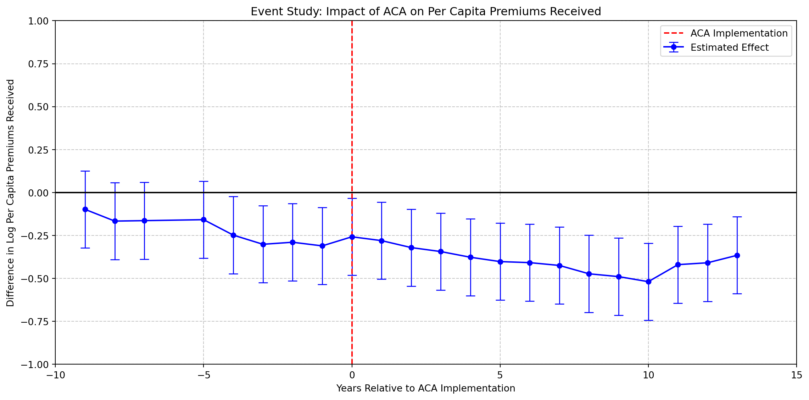

import pandas as pd
import numpy as np
import matplotlib.pyplot as plt
import statsmodels.api as sm
from statsmodels.formula.api import ols
# Path to the file
excel_file = "C:/Users/alexr/OneDrive/Desktop/WORK/490_thesis/Final/processed_combined_data_1999-2023.xlsx"
# List of ACA states
aca_states = ['AK', 'AZ', 'AR', 'CA', 'CO', 'CT', 'DE', 'DC', 'HI', 'IL',
'IN', 'IA', 'KY', 'LA', 'ME', 'MD', 'MA', 'MI', 'MN', 'MS',
'MO', 'MT', 'NE', 'NV', 'NH', 'NJ', 'NM', 'NY', 'NC', 'ND',
'OH', 'OK', 'OR', 'PA', 'RI', 'SC', 'SD', 'UT', 'VT', 'VA', 'WA']
# Initialize a list to store the dataframes for each year
all_data = []
# Process each year's data (excluding 1999, 2000, and 2004)
for year in range(2001, 2024):
if year != 2004:
try:
# Read sheet
df = pd.read_excel(excel_file, sheet_name=f"Year_{year}")
# Add Year column
df['Year'] = year
# Determine the correct state column
state_col = 'SPONS_DFE_MAIL_US_STATE' if year >= 2009 else 'SPONS_DFE_STATE'
# Add ACA indicator
df['ACA'] = df[state_col].isin(aca_states).astype(int)
# Calculate per capita value, replacing infinities and NaNs with NaN
df['WLFR_PREMIUM_RCVD_AMT_PER_CAPITA'] = df['WLFR_PREMIUM_RCVD_AMT'] / df['INS_PRSN_COVERED_EOY_CNT']
df['WLFR_PREMIUM_RCVD_AMT_PER_CAPITA'] = df['WLFR_PREMIUM_RCVD_AMT_PER_CAPITA'].replace([np.inf, -np.inf], np.nan)
all_data.append(df)
except Exception as e:
print(f"Failed to process Year_{year}: {e}")
# Combine all data
combined_data = pd.concat(all_data, ignore_index=True)
# Remove rows with NaN or non-positive values in the dependent variable
combined_data = combined_data[combined_data['WLFR_PREMIUM_RCVD_AMT_PER_CAPITA'] > 0]
# Remove outliers (5% from each tail)
combined_data = combined_data[combined_data['WLFR_PREMIUM_RCVD_AMT_PER_CAPITA'].between(
combined_data['WLFR_PREMIUM_RCVD_AMT_PER_CAPITA'].quantile(0.05),
combined_data['WLFR_PREMIUM_RCVD_AMT_PER_CAPITA'].quantile(0.95)
)]
# Log transform the Y variable
combined_data['log_Y'] = np.log(combined_data['WLFR_PREMIUM_RCVD_AMT_PER_CAPITA'])
# Create Post indicator
combined_data['Post'] = (combined_data['Year'] >= 2010).astype(int)
# Create interaction term
combined_data['ACA_Post'] = combined_data['ACA'] * combined_data['Post']
# Run regression
model = ols('log_Y ~ ACA + Post + ACA_Post', data=combined_data).fit()
# Print regression results
print(model.summary())
# Prepare data for event study graph
event_study_data = []
for year in range(2001, 2024):
if year != 2004:
year_data = combined_data[combined_data['Year'] == year]
aca_mean = year_data[year_data['ACA'] == 1]['log_Y'].mean()
non_aca_mean = year_data[year_data['ACA'] == 0]['log_Y'].mean()
if not np.isnan(aca_mean) and not np.isnan(non_aca_mean):
diff = aca_mean - non_aca_mean
event_study_data.append({'Year': year, 'Diff': diff})
event_study_df = pd.DataFrame(event_study_data)
event_study_df['Time'] = event_study_df['Year'] - 2010
# Previous code remains the same until the plotting section
# Create event study graph with confidence intervals
plt.figure(figsize=(12, 6))
# Calculate 95% confidence intervals
ci = 1.96 * event_study_df['Diff'].std()
# Plot points and confidence intervals
plt.errorbar(event_study_df['Time'],
event_study_df['Diff'],
yerr=ci,
fmt='o-',
capsize=5,
capthick=1,
elinewidth=1,
markersize=5,
color='blue',
label='Estimated Effect')
plt.axvline(x=0, color='r', linestyle='--', label='ACA Implementation')
plt.axhline(y=0, color='k', linestyle='-')
# Adjust axes
plt.xlim(-10, 15) # Extend x-axis range
plt.ylim(-1, 1) # Adjust y-axis range
# Add labels and title
plt.xlabel('Years Relative to ACA Implementation')
plt.ylabel('Difference in Log Per Capita Premiums Received')
plt.title('Event Study: Impact of ACA on Per Capita Premiums Received')
# Add grid and legend
plt.grid(True, linestyle='--', alpha=0.7)
plt.legend()
# Adjust layout to prevent label cutoff
plt.tight_layout() OLS Regression Results
==============================================================================
Dep. Variable: log_Y R-squared: 0.009
Model: OLS Adj. R-squared: 0.009
Method: Least Squares F-statistic: 1569.
Date: Tue, 03 Dec 2024 Prob (F-statistic): 0.00
Time: 17:22:57 Log-Likelihood: -9.0029e+05
No. Observations: 503133 AIC: 1.801e+06
Df Residuals: 503129 BIC: 1.801e+06
Df Model: 3
Covariance Type: nonrobust
==============================================================================
coef std err t P>|t| [0.025 0.975]
------------------------------------------------------------------------------
Intercept 6.7751 0.007 981.387 0.000 6.762 6.789
ACA -0.2098 0.008 -27.025 0.000 -0.225 -0.195
Post 0.1604 0.009 18.143 0.000 0.143 0.178
ACA_Post -0.1869 0.010 -18.674 0.000 -0.207 -0.167
==============================================================================
Omnibus: 755177.417 Durbin-Watson: 1.823
Prob(Omnibus): 0.000 Jarque-Bera (JB): 36047.461
Skew: 0.202 Prob(JB): 0.00
Kurtosis: 1.752 Cond. No. 11.7
==============================================================================
Notes:
[1] Standard Errors assume that the covariance matrix of the errors is correctly specified.